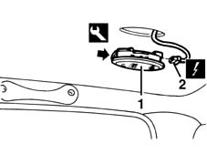
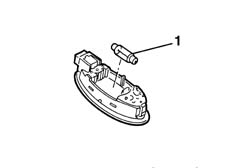

7040E17 lh or rh rear courtesy light - r r
- Path
- Procedures > 70 FITTINGS > 7040 BODYSHELL INTERIOR TRIMS AND FITTINGS > 7040E interior courtesy light system > 7040E17 lh or rh rear courtesy light - r r
- Kind
- repair procedure (removal / refitting; the operation number is the code)
- Applies to
- all engines; all production periods
- Interactive page
- https://sloeber94.github.io/elrnDB-fMltpl/en/#/2892188
Applies to: all engines; all production periods
 Removing
Removing
 Refitting
Refitting1. Remove the courtesey light using the appropriate tool.
 | Name | Country |
|---|---|---|
1 | Scraper blade | 1.878.077.000 |
2. Disconnect the electrical connection.
 | Name | Connector |
|---|---|---|
2 | Rear left courtesy light |
| Name | Connector |
|---|---|---|
2 | Rear right courtesy light |

Applies to: all engines; all production periods
1. If necessary, remove the bulb from the retaining clip.

Applies to: all engines; all production periods
Refitting
RemovingCheck that the courtesy light is undamaged.
If the bulb was removed, refit in its socket.
Connect the electrical connection.
Fit the courtesy light.
Check that the bulb is working.
Topics linked from this page (2)
Topics that link to this page (15)
- 5505B54 tail-gate wiring - r r
- 5505B55 tail-gate wiring - r r
- 5505C41 cabin wiring - r r
- 7015A14 tailgate - adjust centring and profile - includes hinge and compartment seal adaptation
- 7030B06 sliding rooves (assemblies) - r r
- 7030B11 sliding roof(assembly, 1 front or rear - r r )
- 7030B20 sliding roof glass front or rear - r r
- 7030B23 MOULDING/SUPPORT seal for SLIDING ROOF GLASS PANEL, Front or Rear - R.R.
- 7030B24 sliding roof blind,front or rear - r r
- 7030B66 sun-roof movement ecu - r+r
- 7030B74 sun-roof wiring harness - r r or replace
- 7035C10 Third SIDE WINDOW (one), left or right (bonded type) - R.R. - Includes. cleaning edges of window and housing in bodyshell
- 7035C14 fixed rear side window one lh or rh r r includes cleaning of housing
- 7040H10 roof panel lining - r r
- 7040H16 roof panel lining - r r